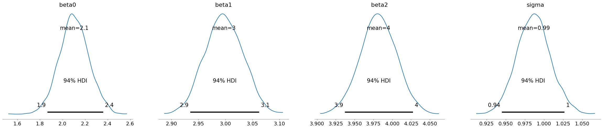
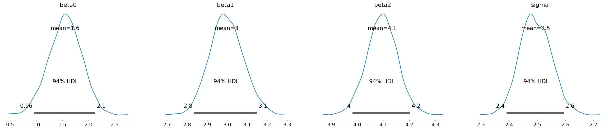
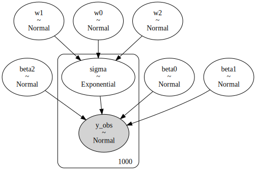

ベイズ線形回帰#
import matplotlib.pyplot as plt
import numpy as np
import scipy as sp
# データを作成
n = 1000
from scipy.stats import multivariate_normal
mean = np.array([3, 5])
Sigma = np.array([
[1, 0.5],
[0.5, 2],
])
X = multivariate_normal.rvs(mean=mean, cov=Sigma, size=n, random_state=0)
import statsmodels.api as sm
X = sm.add_constant(X)
# 真のパラメータ
beta = np.array([2, 3, 4])
データが均一分散の場合#
# 均一分散の場合
e = np.random.normal(loc=0, scale=1, size=n)
y = X @ beta + e
# 頻度主義
import statsmodels.api as sm
ols = sm.OLS(y, X).fit(cov_type="HC1")
ols.summary()
| Dep. Variable: | y | R-squared: | 0.981 |
|---|---|---|---|
| Model: | OLS | Adj. R-squared: | 0.981 |
| Method: | Least Squares | F-statistic: | 2.784e+04 |
| Date: | Fri, 25 Oct 2024 | Prob (F-statistic): | 0.00 |
| Time: | 07:12:07 | Log-Likelihood: | -1407.2 |
| No. Observations: | 1000 | AIC: | 2820. |
| Df Residuals: | 997 | BIC: | 2835. |
| Df Model: | 2 | ||
| Covariance Type: | HC1 |
| coef | std err | z | P>|z| | [0.025 | 0.975] | |
|---|---|---|---|---|---|---|
| const | 1.7961 | 0.127 | 14.155 | 0.000 | 1.547 | 2.045 |
| x1 | 3.0314 | 0.032 | 94.717 | 0.000 | 2.969 | 3.094 |
| x2 | 4.0227 | 0.024 | 168.302 | 0.000 | 3.976 | 4.070 |
| Omnibus: | 0.160 | Durbin-Watson: | 1.973 |
|---|---|---|---|
| Prob(Omnibus): | 0.923 | Jarque-Bera (JB): | 0.103 |
| Skew: | -0.020 | Prob(JB): | 0.950 |
| Kurtosis: | 3.030 | Cond. No. | 25.9 |
Notes:
[1] Standard Errors are heteroscedasticity robust (HC1)
import pymc as pm
import arviz as az
model = pm.Model()
with model:
beta0 = pm.Normal("beta0", mu=0, sigma=1)
beta1 = pm.Normal("beta1", mu=0, sigma=1)
beta2 = pm.Normal("beta2", mu=0, sigma=1)
sigma = pm.HalfNormal("sigma", sigma=1) # 分散なので非負の分布を使う
# 平均値 mu
mu = beta0 + beta1 * X[:, 1] + beta2 * X[:, 2]
# 観測値をもつ確率変数は_obsとする
y_obs = pm.Normal("y_obs", mu=mu, sigma=sigma, observed=y)
# モデルをGraphvizで表示
pm.model_to_graphviz(model)
WARNING (pytensor.tensor.blas): Using NumPy C-API based implementation for BLAS functions.
# ベイズ線形回帰モデルをサンプリング
with model:
idata = pm.sample(
chains=2,
tune=1000, # バーンイン期間の、捨てるサンプル数
draws=2000, # 採用するサンプル数
random_seed=0,
)
# 各chainsの結果を表示
az.plot_trace(idata, figsize=[4, 4])
plt.tight_layout()
plt.show()
Auto-assigning NUTS sampler...
Initializing NUTS using jitter+adapt_diag...
Multiprocess sampling (2 chains in 2 jobs)
NUTS: [beta0, beta1, beta2, sigma]
Sampling 2 chains for 1_000 tune and 2_000 draw iterations (2_000 + 4_000 draws total) took 9 seconds.
---------------------------------------------------------------------------
KeyboardInterrupt Traceback (most recent call last)
Cell In[6], line 3
1 # ベイズ線形回帰モデルをサンプリング
2 with model:
----> 3 idata = pm.sample(
4 chains=2,
5 tune=1000, # バーンイン期間の、捨てるサンプル数
6 draws=2000, # 採用するサンプル数
7 random_seed=0,
8 )
10 # 各chainsの結果を表示
11 az.plot_trace(idata, figsize=[4, 4])
File /usr/local/lib/python3.10/site-packages/pymc/sampling/mcmc.py:877, in sample(draws, tune, chains, cores, random_seed, progressbar, progressbar_theme, step, var_names, nuts_sampler, initvals, init, jitter_max_retries, n_init, trace, discard_tuned_samples, compute_convergence_checks, keep_warning_stat, return_inferencedata, idata_kwargs, nuts_sampler_kwargs, callback, mp_ctx, blas_cores, model, **kwargs)
873 t_sampling = time.time() - t_start
875 # Packaging, validating and returning the result was extracted
876 # into a function to make it easier to test and refactor.
--> 877 return _sample_return(
878 run=run,
879 traces=traces,
880 tune=tune,
881 t_sampling=t_sampling,
882 discard_tuned_samples=discard_tuned_samples,
883 compute_convergence_checks=compute_convergence_checks,
884 return_inferencedata=return_inferencedata,
885 keep_warning_stat=keep_warning_stat,
886 idata_kwargs=idata_kwargs or {},
887 model=model,
888 )
File /usr/local/lib/python3.10/site-packages/pymc/sampling/mcmc.py:945, in _sample_return(run, traces, tune, t_sampling, discard_tuned_samples, compute_convergence_checks, return_inferencedata, keep_warning_stat, idata_kwargs, model)
943 ikwargs: dict[str, Any] = dict(model=model, save_warmup=not discard_tuned_samples)
944 ikwargs.update(idata_kwargs)
--> 945 idata = pm.to_inference_data(mtrace, **ikwargs)
947 if compute_convergence_checks:
948 warns = run_convergence_checks(idata, model)
File /usr/local/lib/python3.10/site-packages/pymc/backends/arviz.py:532, in to_inference_data(trace, prior, posterior_predictive, log_likelihood, log_prior, coords, dims, sample_dims, model, save_warmup, include_transformed)
517 if isinstance(trace, InferenceData):
518 return trace
520 return InferenceDataConverter(
521 trace=trace,
522 prior=prior,
523 posterior_predictive=posterior_predictive,
524 log_likelihood=log_likelihood,
525 log_prior=log_prior,
526 coords=coords,
527 dims=dims,
528 sample_dims=sample_dims,
529 model=model,
530 save_warmup=save_warmup,
531 include_transformed=include_transformed,
--> 532 ).to_inference_data()
File /usr/local/lib/python3.10/site-packages/pymc/backends/arviz.py:429, in InferenceDataConverter.to_inference_data(self)
416 def to_inference_data(self):
417 """Convert all available data to an InferenceData object.
418
419 Note that if groups can not be created (e.g., there is no `trace`, so
420 the `posterior` and `sample_stats` can not be extracted), then the InferenceData
421 will not have those groups.
422 """
423 id_dict = {
424 "posterior": self.posterior_to_xarray(),
425 "sample_stats": self.sample_stats_to_xarray(),
426 "posterior_predictive": self.posterior_predictive_to_xarray(),
427 "predictions": self.predictions_to_xarray(),
428 **self.priors_to_xarray(),
--> 429 "observed_data": self.observed_data_to_xarray(),
430 }
431 if self.predictions:
432 id_dict["predictions_constant_data"] = self.constant_data_to_xarray()
File /usr/local/lib/python3.10/site-packages/arviz/data/base.py:71, in requires.__call__.<locals>.wrapped(cls)
69 if all((getattr(cls, prop_i) is None for prop_i in prop)):
70 return None
---> 71 return func(cls)
File /usr/local/lib/python3.10/site-packages/arviz/data/base.py:71, in requires.__call__.<locals>.wrapped(cls)
69 if all((getattr(cls, prop_i) is None for prop_i in prop)):
70 return None
---> 71 return func(cls)
File /usr/local/lib/python3.10/site-packages/pymc/backends/arviz.py:383, in InferenceDataConverter.observed_data_to_xarray(self)
381 if self.predictions:
382 return None
--> 383 return dict_to_dataset(
384 self.observations,
385 library=pymc,
386 coords=self.coords,
387 dims=self.dims,
388 default_dims=[],
389 )
File /usr/local/lib/python3.10/site-packages/arviz/data/base.py:405, in dict_to_dataset(data, attrs, library, coords, dims, default_dims, index_origin, skip_event_dims)
402 except TypeError: # probably unsortable keys -- the function will still work if
403 pass # it is an honest dictionary.
--> 405 data_vars = {
406 key: numpy_to_data_array(
407 values,
408 var_name=key,
409 coords=coords,
410 dims=dims.get(key),
411 default_dims=default_dims,
412 index_origin=index_origin,
413 skip_event_dims=skip_event_dims,
414 )
415 for key, values in data.items()
416 }
417 return xr.Dataset(data_vars=data_vars, attrs=make_attrs(attrs=attrs, library=library))
File /usr/local/lib/python3.10/site-packages/arviz/data/base.py:406, in <dictcomp>(.0)
402 except TypeError: # probably unsortable keys -- the function will still work if
403 pass # it is an honest dictionary.
405 data_vars = {
--> 406 key: numpy_to_data_array(
407 values,
408 var_name=key,
409 coords=coords,
410 dims=dims.get(key),
411 default_dims=default_dims,
412 index_origin=index_origin,
413 skip_event_dims=skip_event_dims,
414 )
415 for key, values in data.items()
416 }
417 return xr.Dataset(data_vars=data_vars, attrs=make_attrs(attrs=attrs, library=library))
File /usr/local/lib/python3.10/site-packages/arviz/data/base.py:306, in numpy_to_data_array(ary, var_name, coords, dims, default_dims, index_origin, skip_event_dims)
304 # filter coords based on the dims
305 coords = {key: xr.IndexVariable((key,), data=np.asarray(coords[key])) for key in dims}
--> 306 return xr.DataArray(ary, coords=coords, dims=dims)
File /usr/local/lib/python3.10/site-packages/xarray/core/dataarray.py:487, in DataArray.__init__(self, data, coords, dims, name, attrs, indexes, fastpath)
485 coords = create_coords_with_default_indexes(coords)
486 indexes = dict(coords.xindexes)
--> 487 coords = {k: v.copy() for k, v in coords.variables.items()}
489 # These fully describe a DataArray
490 self._variable = variable
File /usr/local/lib/python3.10/site-packages/xarray/core/dataarray.py:487, in <dictcomp>(.0)
485 coords = create_coords_with_default_indexes(coords)
486 indexes = dict(coords.xindexes)
--> 487 coords = {k: v.copy() for k, v in coords.variables.items()}
489 # These fully describe a DataArray
490 self._variable = variable
File /usr/local/lib/python3.10/site-packages/xarray/core/variable.py:2786, in IndexVariable.copy(self, deep, data)
2783 ndata = self._data
2785 if deep:
-> 2786 ndata = copy.deepcopy(ndata, None)
2788 else:
2789 ndata = as_compatible_data(data)
File /usr/local/lib/python3.10/copy.py:172, in deepcopy(x, memo, _nil)
170 y = x
171 else:
--> 172 y = _reconstruct(x, memo, *rv)
174 # If is its own copy, don't memoize.
175 if y is not x:
File /usr/local/lib/python3.10/copy.py:271, in _reconstruct(x, memo, func, args, state, listiter, dictiter, deepcopy)
269 if state is not None:
270 if deep:
--> 271 state = deepcopy(state, memo)
272 if hasattr(y, '__setstate__'):
273 y.__setstate__(state)
File /usr/local/lib/python3.10/copy.py:146, in deepcopy(x, memo, _nil)
144 copier = _deepcopy_dispatch.get(cls)
145 if copier is not None:
--> 146 y = copier(x, memo)
147 else:
148 if issubclass(cls, type):
File /usr/local/lib/python3.10/copy.py:211, in _deepcopy_tuple(x, memo, deepcopy)
210 def _deepcopy_tuple(x, memo, deepcopy=deepcopy):
--> 211 y = [deepcopy(a, memo) for a in x]
212 # We're not going to put the tuple in the memo, but it's still important we
213 # check for it, in case the tuple contains recursive mutable structures.
214 try:
File /usr/local/lib/python3.10/copy.py:211, in <listcomp>(.0)
210 def _deepcopy_tuple(x, memo, deepcopy=deepcopy):
--> 211 y = [deepcopy(a, memo) for a in x]
212 # We're not going to put the tuple in the memo, but it's still important we
213 # check for it, in case the tuple contains recursive mutable structures.
214 try:
File /usr/local/lib/python3.10/copy.py:146, in deepcopy(x, memo, _nil)
144 copier = _deepcopy_dispatch.get(cls)
145 if copier is not None:
--> 146 y = copier(x, memo)
147 else:
148 if issubclass(cls, type):
File /usr/local/lib/python3.10/copy.py:231, in _deepcopy_dict(x, memo, deepcopy)
229 memo[id(x)] = y
230 for key, value in x.items():
--> 231 y[deepcopy(key, memo)] = deepcopy(value, memo)
232 return y
File /usr/local/lib/python3.10/copy.py:153, in deepcopy(x, memo, _nil)
151 copier = getattr(x, "__deepcopy__", None)
152 if copier is not None:
--> 153 y = copier(memo)
154 else:
155 reductor = dispatch_table.get(cls)
File /usr/local/lib/python3.10/site-packages/pandas/core/indexes/base.py:1304, in Index.__deepcopy__(self, memo)
1296 @final
1297 def __deepcopy__(self, memo=None) -> Self:
1298 """
1299 Parameters
1300 ----------
1301 memo, default None
1302 Standard signature. Unused
1303 """
-> 1304 return self.copy(deep=True)
File /usr/local/lib/python3.10/site-packages/pandas/core/indexes/base.py:1284, in Index.copy(self, name, deep)
1250 def copy(
1251 self,
1252 name: Hashable | None = None,
1253 deep: bool = False,
1254 ) -> Self:
1255 """
1256 Make a copy of this object.
1257
(...)
1281 False
1282 """
-> 1284 name = self._validate_names(name=name, deep=deep)[0]
1285 if deep:
1286 new_data = self._data.copy()
File /usr/local/lib/python3.10/site-packages/pandas/core/indexes/base.py:1710, in Index._validate_names(self, name, names, deep)
1708 raise TypeError("Can only provide one of `names` and `name`")
1709 if names is None and name is None:
-> 1710 new_names = deepcopy(self.names) if deep else self.names
1711 elif names is not None:
1712 if not is_list_like(names):
File /usr/local/lib/python3.10/copy.py:172, in deepcopy(x, memo, _nil)
170 y = x
171 else:
--> 172 y = _reconstruct(x, memo, *rv)
174 # If is its own copy, don't memoize.
175 if y is not x:
File /usr/local/lib/python3.10/copy.py:265, in _reconstruct(x, memo, func, args, state, listiter, dictiter, deepcopy)
263 if deep and args:
264 args = (deepcopy(arg, memo) for arg in args)
--> 265 y = func(*args)
266 if deep:
267 memo[id(x)] = y
File /usr/local/lib/python3.10/copy.py:264, in <genexpr>(.0)
262 deep = memo is not None
263 if deep and args:
--> 264 args = (deepcopy(arg, memo) for arg in args)
265 y = func(*args)
266 if deep:
File /usr/local/lib/python3.10/copy.py:177, in deepcopy(x, memo, _nil)
175 if y is not x:
176 memo[d] = y
--> 177 _keep_alive(x, memo) # Make sure x lives at least as long as d
178 return y
File /usr/local/lib/python3.10/copy.py:254, in _keep_alive(x, memo)
244 """Keeps a reference to the object x in the memo.
245
246 Because we remember objects by their id, we have
(...)
251 the memo itself...
252 """
253 try:
--> 254 memo[id(memo)].append(x)
255 except KeyError:
256 # aha, this is the first one :-)
257 memo[id(memo)]=[x]
KeyboardInterrupt:
az.plot_posterior(idata)
plt.show()

データが不均一分散の場合#
# 不均一分散の場合
def normalize(x):
return (x - x.min()) / (x.max() - x.min())
sigma = 1 + normalize(X[:, 1] + X[:, 2]) * 3
e = np.random.normal(loc=0, scale=sigma, size=n)
y = X @ beta + e
頻度主義 & 不均一分散に頑健な誤差推定#
# 頻度主義
import statsmodels.api as sm
ols = sm.OLS(y, X).fit(cov_type="HC1")
ols.summary()
| Dep. Variable: | y | R-squared: | 0.892 |
|---|---|---|---|
| Model: | OLS | Adj. R-squared: | 0.892 |
| Method: | Least Squares | F-statistic: | 3619. |
| Date: | Tue, 15 Oct 2024 | Prob (F-statistic): | 0.00 |
| Time: | 12:22:57 | Log-Likelihood: | -2333.1 |
| No. Observations: | 1000 | AIC: | 4672. |
| Df Residuals: | 997 | BIC: | 4687. |
| Df Model: | 2 | ||
| Covariance Type: | HC1 |
| coef | std err | z | P>|z| | [0.025 | 0.975] | |
|---|---|---|---|---|---|---|
| const | 1.6243 | 0.325 | 5.005 | 0.000 | 0.988 | 2.260 |
| x1 | 2.9916 | 0.088 | 34.082 | 0.000 | 2.820 | 3.164 |
| x2 | 4.0861 | 0.062 | 65.520 | 0.000 | 3.964 | 4.208 |
| Omnibus: | 16.923 | Durbin-Watson: | 1.969 |
|---|---|---|---|
| Prob(Omnibus): | 0.000 | Jarque-Bera (JB): | 27.027 |
| Skew: | 0.120 | Prob(JB): | 1.35e-06 |
| Kurtosis: | 3.769 | Cond. No. | 25.9 |
Notes:
[1] Standard Errors are heteroscedasticity robust (HC1)
↑ 切片の推定にバイアスが入っている
均一分散を想定したベイズ線形回帰#
import pymc as pm
import arviz as az
model = pm.Model()
with model:
beta0 = pm.Normal("beta0", mu=0, sigma=1)
beta1 = pm.Normal("beta1", mu=0, sigma=1)
beta2 = pm.Normal("beta2", mu=0, sigma=1)
sigma = pm.HalfNormal("sigma", sigma=1) # 分散なので非負の分布を使う
# 平均値 mu
mu = beta0 + beta1 * X[:, 1] + beta2 * X[:, 2]
# 観測値をもつ確率変数は_obsとする
y_obs = pm.Normal("y_obs", mu=mu, sigma=sigma, observed=y)
# モデルをGraphvizで表示
pm.model_to_graphviz(model)
# ベイズ線形回帰モデルをサンプリング
with model:
idata = pm.sample(
chains=2,
tune=1000, # バーンイン期間の、捨てるサンプル数
draws=2000, # 採用するサンプル数
random_seed=0,
)
# 各chainsの結果を表示
az.plot_trace(idata, figsize=[4, 4])
plt.tight_layout()
plt.show()
Auto-assigning NUTS sampler...
Initializing NUTS using jitter+adapt_diag...
Multiprocess sampling (2 chains in 2 jobs)
NUTS: [beta0, beta1, beta2, sigma]
Sampling 2 chains for 1_000 tune and 2_000 draw iterations (2_000 + 4_000 draws total) took 10 seconds.
We recommend running at least 4 chains for robust computation of convergence diagnostics
az.plot_posterior(idata)
plt.show()

不均一分散を想定したベイズ線形回帰（WIP）#
import pymc as pm
import arviz as az
model = pm.Model()
with model:
beta0 = pm.Normal("beta0", mu=0, sigma=1)
beta1 = pm.Normal("beta1", mu=0, sigma=1)
beta2 = pm.Normal("beta2", mu=0, sigma=1)
# 誤差分散にも線形モデルを入れる
w0 = pm.Normal("w0", mu=0, sigma=1)
w1 = pm.Normal("w1", mu=0, sigma=1)
w2 = pm.Normal("w2", mu=0, sigma=1)
lam = pm.math.exp(w0 + w1 * X[:, 1] + w2 * X[:, 2])
sigma = pm.Exponential("sigma", lam=lam) # 分散なので非負の分布を使う
# 平均値 mu
mu = beta0 + beta1 * X[:, 1] + beta2 * X[:, 2]
# 観測値をもつ確率変数は_obsとする
y_obs = pm.Normal("y_obs", mu=mu, sigma=sigma, observed=y)
# モデルをGraphvizで表示
pm.model_to_graphviz(model)

# ベイズ線形回帰モデルをサンプリング
with model:
idata = pm.sample(
chains=2,
tune=1000, # バーンイン期間の、捨てるサンプル数
draws=2000, # 採用するサンプル数
random_seed=0,
)
# 各chainsの結果を表示
az.plot_trace(idata, figsize=[4, 4])
plt.tight_layout()
plt.show()
Auto-assigning NUTS sampler...
Initializing NUTS using jitter+adapt_diag...
Multiprocess sampling (2 chains in 2 jobs)
NUTS: [beta0, beta1, beta2, w0, w1, w2, sigma]
Sampling 2 chains for 1_000 tune and 2_000 draw iterations (2_000 + 4_000 draws total) took 198 seconds.
There were 844 divergences after tuning. Increase `target_accept` or reparameterize.
We recommend running at least 4 chains for robust computation of convergence diagnostics
The rhat statistic is larger than 1.01 for some parameters. This indicates problems during sampling. See https://arxiv.org/abs/1903.08008 for details
The effective sample size per chain is smaller than 100 for some parameters. A higher number is needed for reliable rhat and ess computation. See https://arxiv.org/abs/1903.08008 for details
/tmp/ipykernel_18049/1400604983.py:12: UserWarning: Tight layout not applied. tight_layout cannot make axes height small enough to accommodate all axes decorations.
plt.tight_layout()
az.plot_posterior(idata)
plt.show()
/usr/local/lib/python3.10/site-packages/arviz/plots/plot_utils.py:270: UserWarning: rcParams['plot.max_subplots'] (40) is smaller than the number of variables to plot (1006) in plot_posterior, generating only 40 plots
warnings.warn(